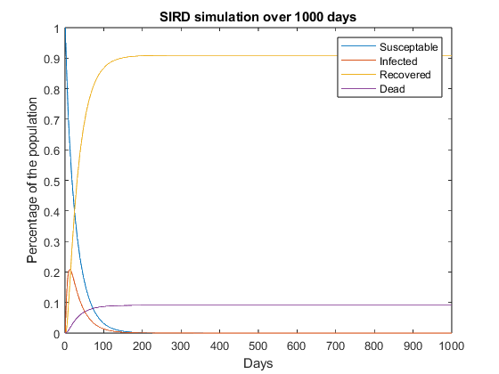
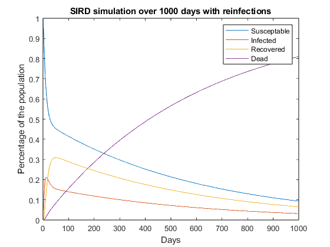

Contents
close all
clc
clear
Basic SIRD
A = [0.95 0.04 0 0; 0.05 0.85 0 0; 0 0.1 1 0; 0 0.01 0 1];
X = [1 0 0 0];
t = 1000;
Simulation = zeros(4,t);
Simulation(:,1) = X;
for i = 1:t-1
Simulation(:,i+1) = A*Simulation(:,i);
end
figure
plot(Simulation');
title("SIRD simulation over 1000 days")
legend("Susceptable", "Infected", "Recovered","Dead")
xlabel("Days")
ylabel("Percentage of the population")

Modifieded SIRD
A_reinfect = [0.95 0.04 0.05 0; 0.05 0.85 0 0; 0 0.1 0.95 0; 0 0.01 0 1];
ReSimulation = zeros(4,t);
ReSimulation(:,1) = X;
for i = 1:t-1
ReSimulation(:,i+1) = A_reinfect*ReSimulation(:,i);
end
figure
plot(ReSimulation');
title("SIRD simulation over 1000 days with reinfections")
legend("Susceptable", "Infected", "Recovered","Dead")
xlabel("Days")
ylabel("Percentage of the population")
